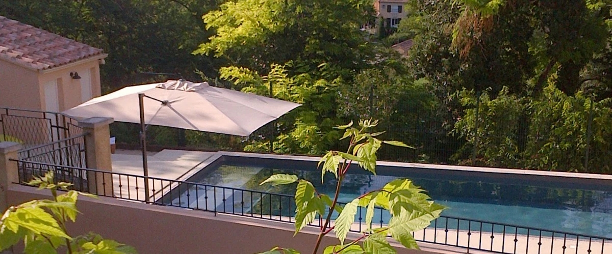
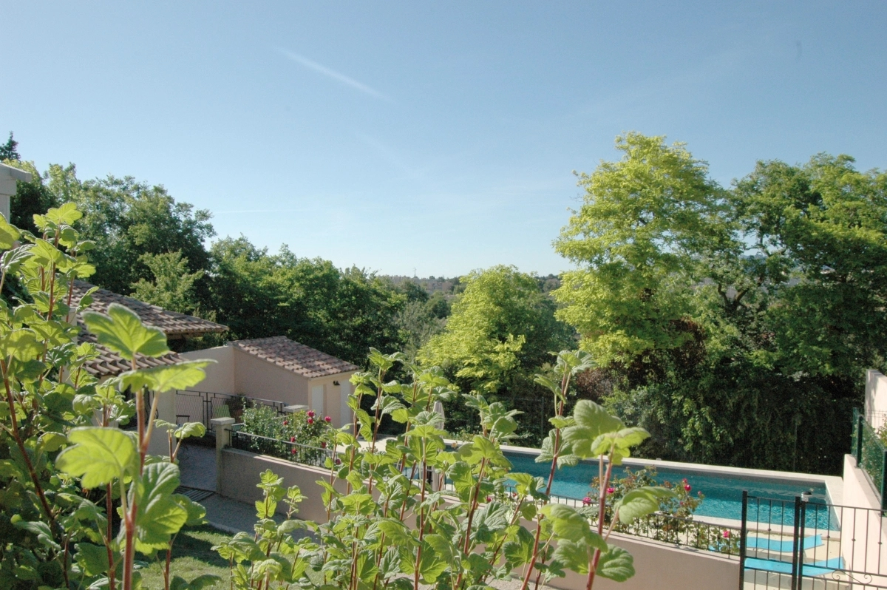
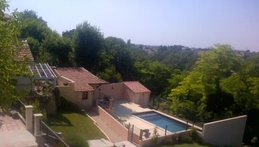

  
Vue partielle avec le Studio en contrebas de la Maison et en dessous la piscine, puis le ravin vers l’ Auzon.
Un cadre unique en plein centre de Carpentras
Situé à 5 min à pied du centre ville de Carpentras , capitale du Comtat Venaissin , le Clos Marie Joseph propose la location d’un gîte dans un environnement chaleureux et verdoyant.
Le gîte, idéal pour les familles nombreuses ou plusieurs couples, propose jusqu’à 7 chambres et 13 couchages modulables selon les besoins.
Jeanne & Dominique seront heureux de vous accueillir dans cette demeure de charme qui combine la tranquillité de la campagne aux avantages du centre ville.